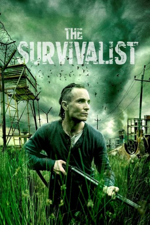

#3850 The Survivalist
 
 IMDB-Wertung: 6.2 / 10
IMDB-Wertung: 6.2 / 10  Metascore: 0
Metascore: 0 
In einer postapokalyptischen Welt, die von Hungersnot geprägt ist, schlägt sich ein namenloser Überlebenskünstler seit sieben Jahren auf einem kleinen, tief im Wald versteckten Landstück durch. Als zwei Frauen auf der Suche nach Essbarem und einer Bleibe die Farm entdecken, gerät seine Existenz in Gefahr und sein bisher relativ geregeltes Leben aus den Fugen: Kathryn und ihre Tochter Milja bieten ihm im Austausch für Nahrung und Unterschlupf Sex an und der Survivalist bricht, überwältigt von seinem Verlangen, seinen strikten Kodex der Selbsterhaltung und nimmt sie bei sich in der Hütte auf. Dennoch gelingt es ihm nicht, sein Misstrauen komplett abzuschütteln, schließlich lautet die Regel in ihrer Welt Töten oder getötet werden…
Jahr: 2015
Dauer: 103 Minuten
FSK: 16
Land: England Studio: Tour de ForceTonspuren: DD5.1 - ,
Untertitel: Deutsch, Englisch,
Auflösung: 1080p (1920x800) Größe: 9246 MB
Genre: Thriller, Drama, Sci-Fi
Regisseur: Stephen Fingleton
Drehbuch: Laura Hillenbrand
Soundtrack:
Darsteller:
 Mia Goth als Milja
Mia Goth als Milja Martin McCann als Survivalist
Martin McCann als Survivalist Andrew Simpson als Gaunt Man
Andrew Simpson als Gaunt Man- Barry Ward als Forager
- Olwen Fouere als Kathryn
 Douglas Russell als The Snatcher
Douglas Russell als The Snatcher- Ryan McParland als Leader of the Lost Boys
- Kieri Kennedy als The woman in the photograph
- Hussina Raja als Watchwoman
- Michael Og Lane als Raider
- Ciaran Flynn als Watchman
- Sean Doupe als Raider
- Jeremy Martin als Raider
- Aran Downey als Raider
- Dexter Louca Godfrey als Settlement Child
- Caitlin Deeds als Settler Woman
- Logan Kerr als Raider
- Aaron Goldring als Raider
- Matthew Henry als Raider
Datei: X:\2015(N-Z)\Survivalist, The (2015, FSK16, 1920x800).mkv seit 20.06.2016
Festplatte: HD 2015(A-Z)
 Es gibt insgesamt 161 Filme in der Gruppe '2015(N-Z)'
Es gibt insgesamt 161 Filme in der Gruppe '2015(N-Z)'